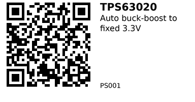

TPS63020 3.3V Buck-Boost Module — PS001¶
Topology: Non-inverting buck-boost (single inductor)
IC: TI TPS63020
Description¶
This module adopts the TI special chip TPS63020 for voltage regulation and regulation, with low output ripple and stable performance. The switching frequency is up to 2.4MHZ, and the output current is mostly greater than 900ma. It provides multiple output versions of 3.3V, 4.2V, and 5V, which is very suitable for various occasions where 3.3V 5V microcontrollers use carp batteries and USB for power supply. Similarly, the module reserves two modes for users to choose from: conventional working mode and energy-saving mode.
The module has a typical voltage up and down structure, with an input voltage range of 1.8-5.5V and an output current of It meets the power supply needs of various models such as STM32, ESP32, and 51 microcontroller, and the board is equipped with Red LED output indicator light and support for power-saving mode to increase the continuity of input devices such as batteries Flight time.
Parameter Introduction¶
- Module type: voltage rise and fall power supply
- Input voltage: DC 1 8-5.5V
- Output current: 3.3V@1.3A / 4.2V@1A / 5V@O.9A
(3.7V input)
- Output voltage: DC 3 3/4.2/5V
- Switching frequency: approximately 2.4MHZ
-
Working mode:
- Normal/Power saving mode
- Adjustment method: Jumper pad selection, 3.3/4.2/5V
-
Module interface: Large area solder pad (can also be connected to 2.54mm row pins)
- Module size: 17.4 x 26 2mm (manual measurement with deviation)
- Users can customize the output voltage, short 3V3 pad output 3.3V voltage, the same 4V2 pad output 4.2V, do not short-circuit multiple pads at the same time
| Pin Name | Pin Function |
|---|---|
| VIN | Power input positive, 8 – 5.5 V |
| GND | Input/output negative pole, shared |
| VOUT | Power output, 3.3 / 4.2 / 5 V |
| PS | Short pad to enable Power Save Mode |
| EN | Suspend/Enable pin, low level = disabled |
| Voltage Jumper Pad | Short-circuit the pad to enable the corresponding voltage. Do not disconnect or short multiple pads at once. |
About output
1, the module is not high-power design, but it is suitable for most of the MCU equipment power supply, so do not exceed the following tested limit value when using, especially the load current.
- The min voltage of the module can reach 1.8V, but the output power is small when the voltage is low, so we recommend using the max output current under different voltage input measured below.
3, about the power saving mode and output indicator, due to the existence of the indicator, the static power consumption in the power saving mode is still high, if the user needs the power saving mode and does not need the indicator light, you can remove the indicator light to reduce the static power consumption.
4, the user can customize the output voltage, short 3V3 pad output 3.3V voltage, the same 4V2 pad output 4.2V, forbid short circuit multiple pads at the same time if you need the output voltage is not within the range of three jumper pads, then you can disconnect the three jumper pads, welding the two 0603 resistors at the position of ADJ, the default welding R1 bit 0Q, R2 is reserved for users. The formula for calculating the output voltage is as follows
R1+R2 =180K(VOUT 0.5-1)
The following measurement parameters are measured in PWM mode to obtain module output
max current can be used by referring to the table below
| Input Voltage | Output Voltage | Max Output Current |
|---|---|---|
| 2 V | 3.3 V | 600 mA |
| 3 V | 3.3 V | 1000 mA |
| 3.7 V | 3.3 V | 1300 mA |
| 5 V | 3.3 V | 1500 mA |
| 2 V | 4.2 V | 400 mA |
| 3 V | 4.2 V | 800 mA |
| 3.7 V | 4.2 V | 1000 mA |
| 5 V | 4.2 V | 1300 mA |
| 2 V | 5 V | 400 mA |
| 3 V | 5 V | 700 mA |
| 3.7 V | 5 V | 900 mA |
| 5 V | 5 V | 1200 mA |
Ratings (from datasheet/module listings)¶
- Input (Vin): 1.8–5.5 V.
- Output (Vout): Fixed 3.3 V (module variant), IC supports 1.2–5.5 V adjustable.
- Output current: Up to ~2 A at 3.3 V when Vin > 2.5 V (continuous capability depends on Vin/Vout and thermal). Some module listings advertise up to 3 A peak.
- Efficiency: Up to ~96 % (condition-dependent).
- Switching freq.: 2.4 MHz.
- Quiescent current: ~25 µA (IC), modules may quote ≤50 µA power-save.
Note: Real continuous current on small boards is typically ~1–2 A without extra cooling; treat “3 A” as peak/marketing for these tiny modules. (Backed by IC limits in datasheet.)
Link: AliExpress
QR for printing will appear here after you run the script:
